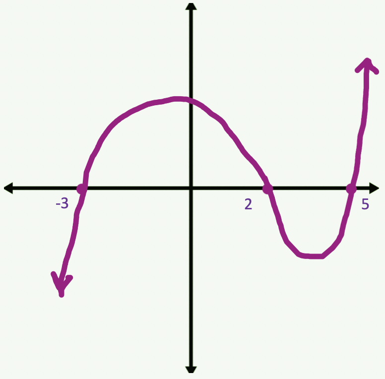
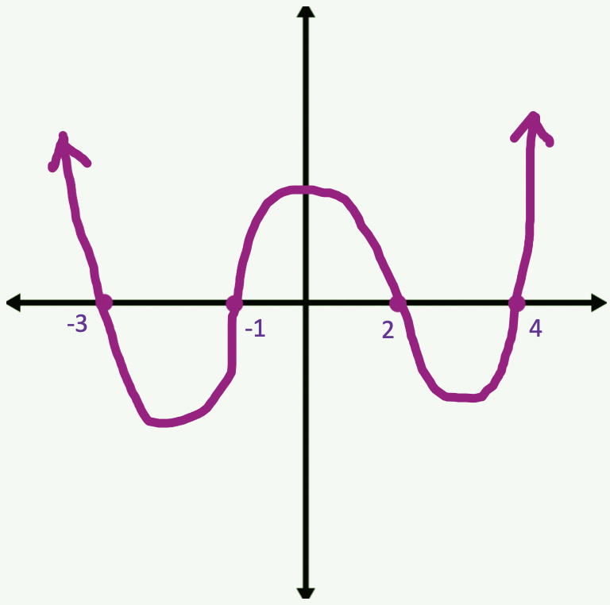
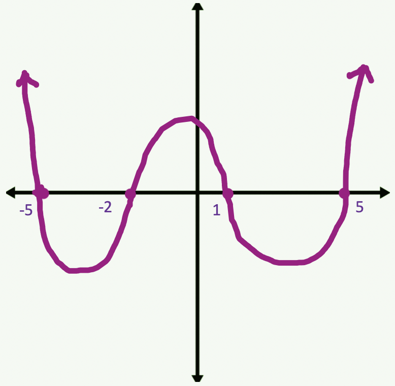

In this module we will cover how to locate the zeros of a Polynomial Function when given the equation of the polynomial.
Prior to starting this module it is recommended that you review the Factoring Polynomials Module. Factoring Polynomials
The Zeros of a polynomial are the locations where the graph crosses the x-axis. A function can cross many times or only a few times, depending on its equation. The zeros of a polynomial are written as factors (x - b) where b is the x-intercepts of the function. A function with many factors takes the form f(x) = (x - b1)(x - b2)(x - b3)(x - b4) and so on.
Rule: Multiplicative Property of Zero
If a ⋅ b ⋅ c = 0, then either a = 0, b = 0, or c = 0
This rule is applied to a polynomial function so that we can calculate the zeros of the function when given the equation.
For example: Find the zeros of the function.
f(x) = (x - 5)(x - 2)(x + 3)
Using the rule, we re-write each factor equal to zero, then solve the equation for x.
Solution:
x - 5 = 0 ⇒ x = 5
x - 2 = 0 ⇒ x = 2
x + 3 = 0 ⇒ x = -3
The x-intercepts are at 5, 2, and -3. Using this info we can make a rough draft sketch of the polynomial, shown below:

Example 2: Find the zeros of the function.
f(x) = (x - 2)(x + 1)(x + 3)(x - 4)
Using the rule, we re-write each factor equal to zero, then solve the equation for x.
Solution:
x - 2 = 0 ⇒ x = 2
x + 1 = 0 ⇒ x = -1
x + 3 = 0 ⇒ x = -3
x - 4 = 0 ⇒ x = 4
The x-intercepts are at -3, -1, 2, and 4. Using this info we can make a rough draft sketch of the polynomial, shown below:

Example 3: Find the zeros of the function.
f(x) = (x + 2)(x + 5)(x - 1)(x - 5)
Using the rule, we re-write each factor equal to zero, then solve the equation for x.
Solution:
x + 2 = 0 ⇒ x = -2
x + 5 = 0 ⇒ x = -5
x - 1 = 0 ⇒ x = 1
x - 5 = 0 ⇒ x = 5
The x-intercepts are at -5, -2, 1, and 5. Using this info we can make a rough draft sketch of the polynomial, shown below:

Given the polynomial function, calculate its zeros.
f(x) = (x - 7)(x + 2)(x - 3)
Solution:
The zeros are at:
Given the polynomial function, calculate its zeros.
f(x) = (x + 4)(x - 1)(x - 6)(x + 3)
Solution:
The zeros are at:
Given the polynomial function, calculate its zeros.
f(x) = (x - 8)(x - 6)(x + 2)(x + 4)
Solution:
The zeros are at:
Given the polynomial function, calculate its zeros.
f(x) = (x + 3)(x - 7)(x + 8)
Solution:
The zeros are at: